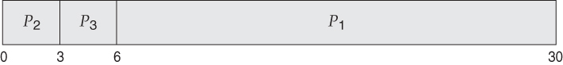

Scheduling Algorithms
Notice that the long process P1 will prevent the rest of the processes from running on the CPU for 24 milliseconds. Specifically, the average waiting time in this schedule is (0 + 24 + 27) / 3 = 17 milliseconds. The average response time in this case is the same as the average waiting time, which is (0 + 24 + 27) / 3 = 17 ms.
If processes P2 and P3 would arrive just before P1, the schedule would be much different:

The schedule of the 3 processes under FCFS. Taken from Bell, John T. "CPU Scheduling." University of Illinois, Chicago.
Above, since the smaller processes get to complete the first, the average waiting time drops to (0 + 3 + 6)/3 = 3 milliseconds. In other words, the average waiting time highly depends on when each process arrives.
 These notes by Miriam Briskman are licensed under CC BY-NC 4.0 and based on sources.
These notes by Miriam Briskman are licensed under CC BY-NC 4.0 and based on sources.